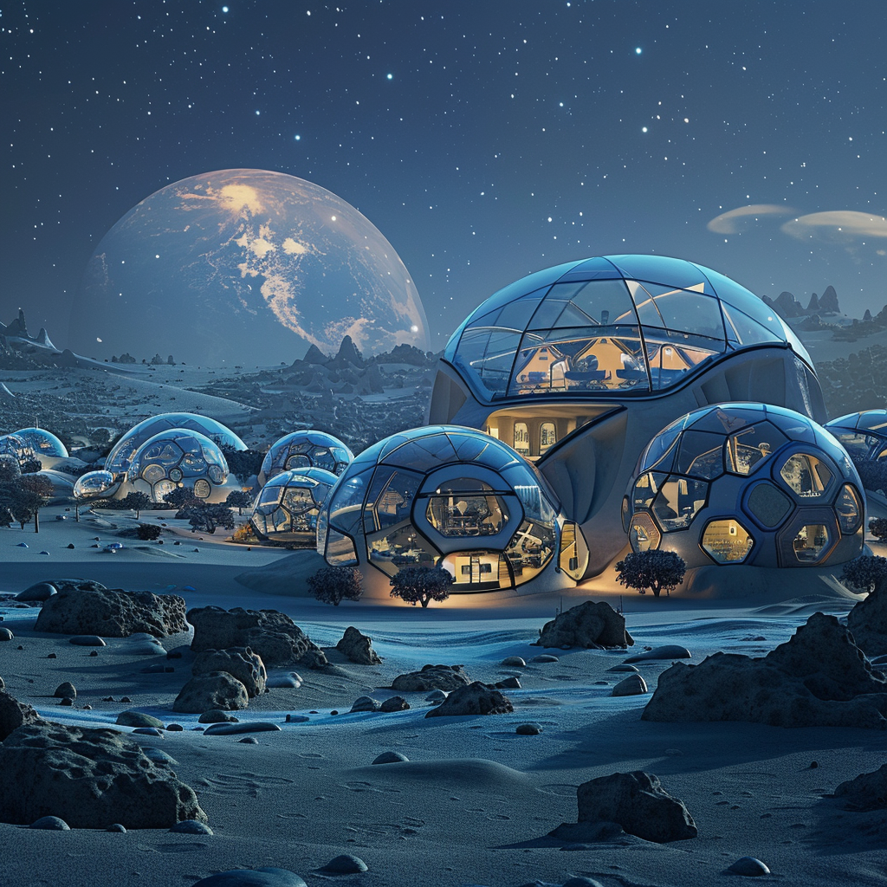

Introduction to Lunar Resource Utilization

Resource Utilization
A lunar base focusing on potential resource extraction and utilization (e.g., water ice) to support sustainable operations.
Population: Variable, depending on operational phases and resource demand
Surface Area Estimate: Approximately 5000 square meters
Total Surface Area Components:
- Resource Extraction and Processing: Facilities for mining and processing resources (~2000 sqm)
- Living Quarters: Habitats for crew members involved in resource operations (~1000 sqm)
- Logistics and Supply: Warehouses, storage tanks, docking facilities for supply ships (~1000 sqm)
- Research Laboratories: Labs for studying resource extraction techniques (~1000 sqm)
- Medical Facilities: Clinic, emergency room, and quarantine rooms (~500 sqm)
Social Structure:
- Rotation schedules for resource extraction teams
- Community events to maintain morale and collaboration